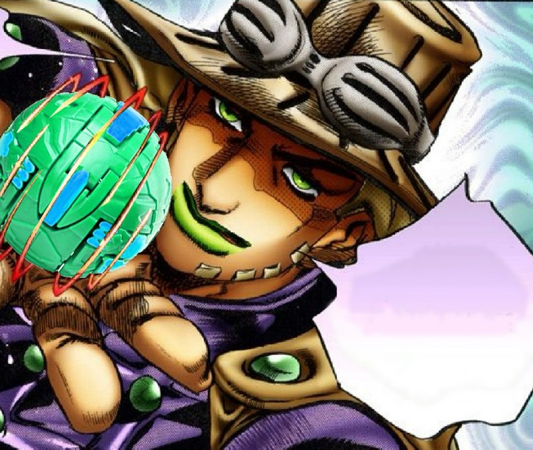

Qual o enredo de JoJo’s Bizarre Adventure?
A obra escrita e ilustrada por Hirohiko Araki segue sempre um membro da família Joestar que está destinado a enfrentar grandes inimigos com poderes sobrenaturais. O Joestar que será marcado com o fardo de salvar o mundo sempre possui duas peculiaridades: a marca de uma estrela nascida em sua pele e a possibilidade de ser apelidado de “JoJo” por conta de seu nome e sobrenome.
Nem sempre as motivações do JoJo da vez ganham escala global, mas eles sempre estão enfrentando inimigos verdadeiramente poderosos que se consideram invencíveis. As tramas desenroladas por Araki costumam brincar bastante com o conceito da “Jornada do Herói”, seguindo cada um dos conceitos apresentados por ela à risca e de forma bastante caricata, o que rende boas risadas e situações absurdas.
Os poderes em JoJo’s Bizarre Adventure
No decorrer dos anos, muitos conceitos de poderes foram abordados pelo autor nas páginas do mangá e, posteriormente, nas cenas do anime. Alguns deles sendo esquecidos e não retomados em ponto algum e outros permanecem por anos a fio como parte intrínseca da história. Esse foi o caso dos stands, introduzidos apenas em Stardust Crusaders, terceira parte da obra, mas que se tornaram algo característico de JoJo’s até os dias atuais.
Máscaras de Pedra
Primeiro item que gera poder místico apresentado na obra, as máscaras de pedra acabam por conceder poderes vampíricos aos seus usuários. A máscara foi criada na época do Império Asteca e tinha como objetivo conceder poderes de uma criatura suprema a quem a usasse. O desempenho do objeto não agradou a seu criador, no entanto, o levando a partir em busca da jóia escarlate que poderá amplificar o poder da máscara e, assim, servir para seus propósitos.
Hamon
Hamon é uma técnica de luta nascida da necessidade de se enfrentar os vampiros criados pela máscara de pedra. Exige bastante treinamento e esforço de seu usuário, gerando uma espécie de energia extra canalizada para várias partes do corpo que pode ser capaz de queimar as criaturas combatidas, assemelhando-se ao efeito que o sol possui sobre elas.
Stands
Trata-se da representação física do poder do usuário, lhe concedendo habilidades sobrenaturais das mais diversas de acordo com o tipo de stand que a pessoa venha a obter. A série mostra diversas formas diferentes que podem ser entendidas como a causa para que alguém se torne um usuário de stand, sendo a mais comum ser atingido por uma flecha feita a partir de um meteorito. Quando essa flecha perfura a pele de uma pessoa isso acaba por culminar em sua morte ou na aquisição de poderes especiais.
Os Joestar acabam por despertar seus stands por conta de uma espécie de herança sanguínea, não precisando assim serem atingidos pelas flechas para obter seus poderes. Joseph Joestar, durante Stardust Crusaders, explica que os stands são derivações do hamon apresentado nas duas partes anteriores, sugerindo que essa seja a origem do despertar dos poderes dentro da família.
Spins
Apresentado apenas a partir da sétima parte, intitulada JoJo’s Bizarre Adventure: Steel Ball Run, o spin é uma forma de energia obtida através de um estado de rotação perfeita que pode ser aplicada de várias formas diferentes. Se trata de uma contraparte direta do hamon das primeiras partes.